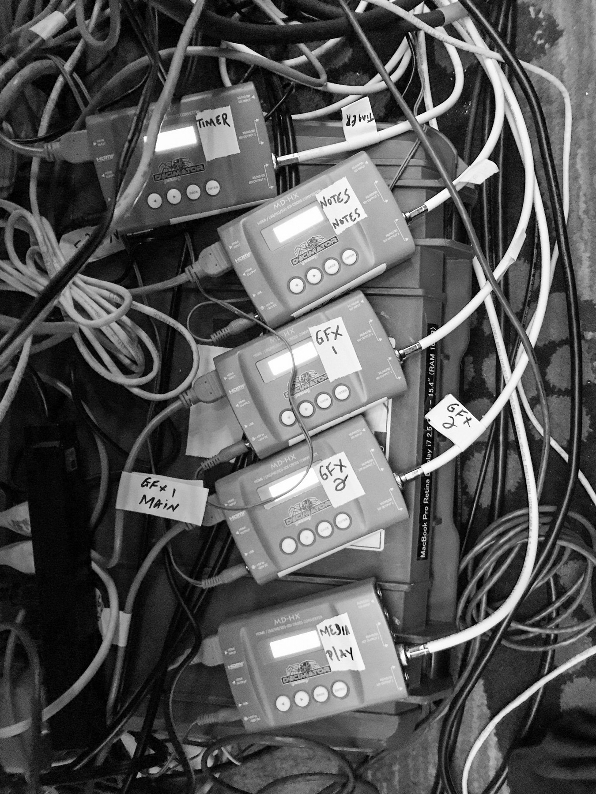

Media
Photos & Video
Stills and video footage from ProAV-live events: backstage, main stage, video productions, and cloud productions.

Stills and video footage from ProAV-live events: backstage, main stage, video productions, and cloud productions.